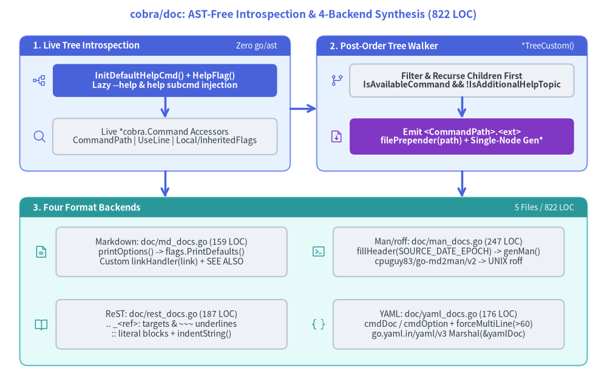
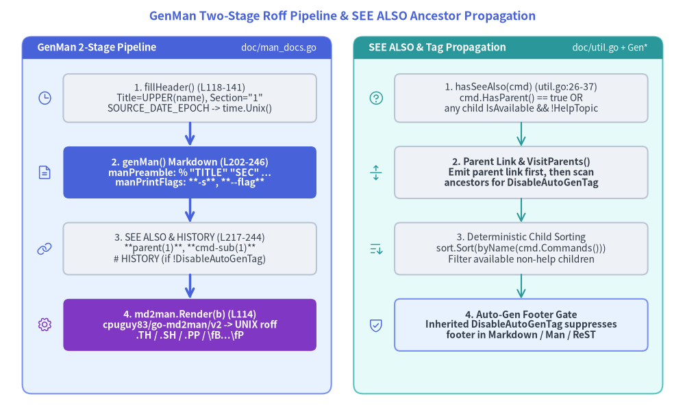

AST-Free Recursive Documentation Synthesis in cobra/doc
While the root github.com/spf13/cobra package handles live CLI flag parsing, lifecycle execution, and runtime shell completion, offline reference documentation is isolated in the github.com/spf13/cobra/doc subpackage (5 non-test Go files, 822 LOC). Rather than statically parsing .go files via go/ast or go/parser, cobra/doc introspects a live in-memory *cobra.Command tree and synthesizes multi-file reference suites across four target formats: Markdown (doc/md_docs.go), UNIX Man Pages / roff (doc/man_docs.go), reStructuredText (doc/rest_docs.go), and YAML (doc/yaml_docs.go).

Source Code
from drawlib.canvas import save, setup
from drawlib.icons import phosphor
from drawlib.lines import line
from drawlib.shapes import rectangle
from drawlib.smartarts import Panel
from drawlib.styles import Styles
from drawlib.text import text
setup(width=184, height=116)
text(
(92, 111.5),
"cobra/doc: AST-Free Introspection & 4-Backend Synthesis (822 LOC)",
style=Styles.PrimaryBold.patch(text_size=12.5),
)
# Top-Left Panel: Stage 1 - Live Tree Introspection
Panel(
"1. Live Tree Introspection",
"Zero go/ast",
style=Styles.PrimaryNeutral,
header_style=Styles.PrimaryFlat,
text_style=Styles.WhiteBold.patch(text_size=10.5),
description_style=Styles.White.patch(text_size=9.5),
header_height=6.0,
).draw((6, 64), width=82, height=41)
phosphor.tree_structure((12, 91.5), width=4.4, style=Styles.Primary)
rectangle(
(50, 91.5),
width=68,
height=10,
style=Styles.PrimaryFlat.patch(shape_r=1.5),
text="InitDefaultHelpCmd() + HelpFlag()\nLazy --help & help subcmd injection",
text_style=Styles.WhiteBold.patch(text_size=10.0),
)
phosphor.magnifying_glass((12, 74.5), width=4.4, style=Styles.Primary)
rectangle(
(50, 74.5),
width=68,
height=11,
style=Styles.Neutral.patch(shape_r=1.5),
text="Live *cobra.Command Accessors\nCommandPath | UseLine | Local/InheritedFlags",
text_style=Styles.Dark.patch(text_size=10.0),
)
line((50, 86.5), (50, 80.0), arrow_head="->", style=Styles.PrimaryBold)
# Top-Right Panel: Stage 2 - Post-Order Tree Walker
Panel(
"2. Post-Order Tree Walker",
"*TreeCustom()",
style=Styles.PrimaryNeutral,
header_style=Styles.PrimaryFlat,
text_style=Styles.WhiteBold.patch(text_size=10.5),
description_style=Styles.White.patch(text_size=9.5),
header_height=6.0,
).draw((96, 64), width=82, height=41)
phosphor.git_branch((102, 91.5), width=4.4, style=Styles.Primary)
rectangle(
(140, 91.5),
width=68,
height=10,
style=Styles.Neutral.patch(shape_r=1.5),
text="Filter & Recurse Children First\nIsAvailableCommand && !IsAdditionalHelpTopic",
text_style=Styles.DarkBold.patch(text_size=10.0),
)
phosphor.file_arrow_down((102, 74.5), width=4.4, style=Styles.Accent)
rectangle(
(140, 74.5),
width=68,
height=11,
style=Styles.AccentFlat.patch(shape_r=1.5),
text="Emit <CommandPath>.<ext>\nfilePrepender(path) + Single-Node Gen*",
text_style=Styles.WhiteBold.patch(text_size=10.0),
)
line((140, 86.5), (140, 80.0), arrow_head="->", style=Styles.PrimaryBold)
# Horizontal link between Stage 1 and Stage 2
line((88, 83), (96, 83), arrow_head="->", style=Styles.PrimaryBold)
# Bottom Panel: Stage 3 - Four Format Backends
Panel(
"3. Four Format Backends",
"5 Files / 822 LOC",
style=Styles.SecondaryNeutral,
header_style=Styles.SecondaryFlat,
text_style=Styles.WhiteBold.patch(text_size=10.5),
description_style=Styles.White.patch(text_size=9.5),
header_height=6.0,
).draw((6, 5), width=172, height=51)
phosphor.file_text((12.5, 39.5), width=4.4, style=Styles.Secondary)
rectangle(
(52, 39.5),
width=70,
height=15,
style=Styles.Neutral.patch(shape_r=1.5),
text="Markdown: doc/md_docs.go (159 LOC)\nprintOptions() -> flags.PrintDefaults()\nCustom linkHandler(link) + SEE ALSO",
text_style=Styles.Dark.patch(text_size=10.0),
)
phosphor.terminal_window((96.5, 39.5), width=4.4, style=Styles.Secondary)
rectangle(
(136, 39.5),
width=70,
height=15,
style=Styles.Neutral.patch(shape_r=1.5),
text="Man/roff: doc/man_docs.go (247 LOC)\nfillHeader(SOURCE_DATE_EPOCH) -> genMan()\ncpuguy83/go-md2man/v2 -> UNIX roff",
text_style=Styles.Dark.patch(text_size=10.0),
)
phosphor.book_open((12.5, 17.5), width=4.4, style=Styles.Secondary)
rectangle(
(52, 17.5),
width=70,
height=15,
style=Styles.Neutral.patch(shape_r=1.5),
text="ReST: doc/rest_docs.go (187 LOC)\n.. _<ref>: targets & ~~~ underlines\n:: literal blocks + indentString()",
text_style=Styles.Dark.patch(text_size=10.0),
)
phosphor.brackets_curly((96.5, 17.5), width=4.4, style=Styles.Secondary)
rectangle(
(136, 17.5),
width=70,
height=15,
style=Styles.Neutral.patch(shape_r=1.5),
text="YAML: doc/yaml_docs.go (176 LOC)\ncmdDoc / cmdOption + forceMultiLine(>60)\ngo.yaml.in/yaml/v3 Marshal(&yamlDoc)",
text_style=Styles.Dark.patch(text_size=10.0),
)
# Vertical arrows from Top Panels to Bottom Panel
line((50, 64), (50, 56), arrow_head="->", style=Styles.PrimaryBold)
line((140, 64), (140, 56), arrow_head="->", style=Styles.PrimaryBold)
save()
1. Why cobra/doc Is "AST-Free"
Many Go documentation generators parse .go source files using go/token, go/parser, and go/ast to extract struct literals and doc comments. For a CLI framework like Cobra, static AST parsing fails whenever command hierarchies, flag defaults, or descriptions are computed dynamically in init() functions, factory constructors, or configuration closures.
Instead, all four single-command generators in cobra/doc — GenMarkdownCustom (doc/md_docs.go:57–117), GenMan (doc/man_docs.go:105–116), GenReSTCustom (doc/rest_docs.go:62–130), and GenYamlCustom (doc/yaml_docs.go:93–147) — operate directly on an already-constructed *cobra.Command graph in memory:
1.1 Pre-Synthesis Lazy Initialization (InitDefaultHelpCmd & InitDefaultHelpFlag)
During normal CLI execution, Command.ExecuteC() (command.go:1109–1111) lazily injects the built-in help [command] subcommand and --help (-h) flag immediately before command dispatch. Because offline documentation tools typically construct the root *cobra.Command tree and pass it directly to doc.Gen* without calling Execute(), every single-node generator starts with the same two initialization calls:
// Invoked at entry of:
// - GenMarkdownCustom (doc/md_docs.go:58-59)
// - genMan (doc/man_docs.go:203-204)
// - GenReSTCustom (doc/rest_docs.go:63-64)
// - GenYamlCustom (doc/yaml_docs.go:94-95)
cmd.InitDefaultHelpCmd()
cmd.InitDefaultHelpFlag()
Tracing these two calls into command.go reveals three side effects essential for accurate documentation output:
cmd.InitDefaultHelpCmd()(command.go:1263–1318):- Checks
if !c.HasSubCommands() { return }(L1264–1266). Leaf commands do not receive ahelpsubcommand. - If
c.helpCommand == nil, constructs the defaulthelp [command]*Command(L1268–1310) and attaches it viac.AddCommand(c.helpCommand)(L1316). - Attaching
c.helpCommandensuresc.Parent().helpCommand == cholds whenIsAvailableCommand()(command.go:1612–1614) inspects children, preventing the auto-generatedhelpcommand from pollutingSEE ALSOcross-reference links or generating standalonemyapp_help.mdfiles.
- Checks
cmd.InitDefaultHelpFlag()(command.go:1219–1232):- Calls
c.mergePersistentFlags()(L1220), which merges ancestorPersistentFlags()intoc.parentsPflagsandc.Flags(). - If
c.Flags().Lookup("help") == nil, registers-h, --help(help for <DisplayName>) onc.Flags()and marks it withFlagSetByCobraAnnotation(L1229–1230). Consequently,-h, --helpis automatically included whencmd.NonInheritedFlags()is rendered.
- Calls
InitDefaultVersionFlag()Is Intentionally Not Called:- Unlike
ExecuteC()(command.go:1111),cobra/docdoes not invokecmd.InitDefaultVersionFlag(), so the auto-generated--versionflag only appears in synthesized docs if initialized prior to callingcobra/doc.
- Unlike
1.2 Runtime Introspection Accessors
After initializing help state, the four generators extract command metadata exclusively through *cobra.Command fields and methods:
| Introspected Member | Source Location | Role in cobra/doc Synthesis |
|---|---|---|
cmd.CommandPath() |
command.go:1465–1470 |
Recursively joins c.Parent().CommandPath() + " " + c.Name() rooted at c.DisplayName(). Used for document titles, filenames, and SEE ALSO labels. |
cmd.Short / cmd.Long |
command.go:63–66 |
Brief summary and full synopsis. GenMan (man_docs.go:144–147) and GenReSTCustom (rest_docs.go:70–73) fall back to cmd.Short if len(cmd.Long) == 0; GenMarkdownCustom (md_docs.go:66–69) omits ### Synopsis when cmd.Long is empty. |
cmd.Runnable() |
command.go:1596–1598 |
Returns `c.Run != nil |
cmd.UseLine() |
command.go:1482–1497 |
Prepends c.parent.CommandPath() to c.Use (with Name() replaced by DisplayName()) and appends " [flags]" if c.HasAvailableFlags() && !c.DisableFlagsInUseLine. |
cmd.Example |
command.go:69 |
Multi-line usage examples rendered as fenced code blocks (.md, .1), indented literal blocks (.rst), or scalar strings (.yaml). |
cmd.NonInheritedFlags() |
command.go:1770–1772 |
Delegates to c.LocalFlags() (command.go:1718–1740), returning flags defined directly on cmd (both local Flags() and cmd's own PersistentFlags()). |
cmd.InheritedFlags() |
command.go:1744–1766 |
Calls c.mergePersistentFlags() and populates c.iflags from c.parentsPflags, excluding any flag shadowed by c.LocalFlags(). |
2. Post-Order Recursive Tree Traversal (*TreeCustom)
Every format provides a convenience wrapper (GenMarkdownTree, GenManTree, GenReSTTree, GenYamlTree) that delegates to a customizable tree walker:
GenMarkdownTreeCustom(cmd, dir, filePrepender, linkHandler)(doc/md_docs.go:133–158)GenManTreeFromOpts(cmd, opts GenManTreeOptions)(doc/man_docs.go:48–80)GenReSTTreeCustom(cmd, dir, filePrepender, linkHandler)(doc/rest_docs.go:145–170)GenYamlTreeCustom(cmd, dir, filePrepender, linkHandler)(doc/yaml_docs.go:60–85)
2.1 Bottom-Up Child Filtering & Traversal Loop
All four tree walkers execute an identical post-order (bottom-up) depth-first traversal:
// Excerpt from GenMarkdownTreeCustom (doc/md_docs.go:133-158)
func GenMarkdownTreeCustom(cmd *cobra.Command, dir string, filePrepender, linkHandler func(string) string) error {
for _, c := range cmd.Commands() {
if !c.IsAvailableCommand() || c.IsAdditionalHelpTopicCommand() {
continue
}
if err := GenMarkdownTreeCustom(c, dir, filePrepender, linkHandler); err != nil {
return err
}
}
basename := strings.ReplaceAll(cmd.CommandPath(), " ", "_") + markdownExtension
filename := filepath.Join(dir, basename)
f, err := os.Create(filename)
if err != nil {
return err
}
defer f.Close()
if _, err := io.WriteString(f, filePrepender(filename)); err != nil {
return err
}
if err := GenMarkdownCustom(cmd, f, linkHandler); err != nil {
return err
}
return nil
}
Before recursing into a child c, the loop enforces a two-part guard (!c.IsAvailableCommand() || c.IsAdditionalHelpTopicCommand()):
c.IsAvailableCommand()(command.go:1607–1621):- Rejects commands where
len(c.Deprecated) != 0 || c.Hidden(L1608–1610). - Rejects the auto-generated
helpsubcommand viaif c.HasParent() && c.Parent().helpCommand == c { return false }(L1612–1614). - Requires
c.Runnable() || c.HasAvailableSubCommands()(L1616–1618).
- Rejects commands where
!c.IsAdditionalHelpTopicCommand()(command.go:1628–1641):- An "additional help topic" is a non-runnable, non-deprecated, non-hidden
*Commandwhose subcommands (if any) are also help topics (e.g.,kubectl help env). AlthoughIsAvailableCommand()already returnsfalsefor leaf help topics (since!c.Runnable() && !c.HasAvailableSubCommands()), checkingIsAdditionalHelpTopicCommand()explicitly guards parent help-topic containers.
- An "additional help topic" is a non-runnable, non-deprecated, non-hidden
2.2 Output Filename Construction, filePrepender, and headerCopy
Once all descendants of cmd have been written to disk, the walker creates the file for cmd itself:
| Generator | Separator | Extension | Prepend Hook / Header Isolation |
|---|---|---|---|
GenMarkdownTreeCustom (md_docs.go:143–156) |
"_" |
".md" (markdownExtension) |
Writes filePrepender(filename) to f before GenMarkdownCustom(cmd, f, linkHandler). |
GenManTreeFromOpts (man_docs.go:61–79) |
"_" default ("-" via GenManTree L42) |
"." + section ("1" default) |
Copies headerCopy := *header (L78) before GenMan(cmd, &headerCopy, f) so fillHeader mutating header.Title per command never leaks across siblings (TestGenManTree, man_docs_test.go:181–183). |
GenReSTTreeCustom (rest_docs.go:155–168) |
"_" |
".rst" |
Writes filePrepender(filename) to f before GenReSTCustom(cmd, f, linkHandler). |
GenYamlTreeCustom (yaml_docs.go:70–83) |
"_" |
".yaml" |
Writes filePrepender(filename) to f before GenYamlCustom(cmd, f, linkHandler). |
2.3 The - / _ Filename Collision Caveat
All four *Tree docstrings (md_docs.go:121–124, man_docs.go:34–37, rest_docs.go:134–137, yaml_docs.go:49–52) document an architectural limitation of flattening cmd.CommandPath() into a single-directory filename:
If
cmdhas two subcommandssubandsub-third(orsub_third), andsubitself has a subcommand namedthird, bothcmd sub thirdandcmd sub-thirdflatten to the same filename (cmd-sub-third.1orcmd_sub_third.md), causing the later node in the post-order walk to overwrite the earlier file.
3. Cross-Reference Synthesis & DisableAutoGenTag Propagation
Three shared helpers in doc/util.go (53 LOC) coordinate cross-references and formatting across the four backends.

Source Code
from drawlib.canvas import save, setup
from drawlib.icons import phosphor
from drawlib.lines import line
from drawlib.shapes import rectangle
from drawlib.smartarts import Panel
from drawlib.styles import Styles
from drawlib.text import text
setup(width=184, height=112)
text(
(92, 107.5),
"GenMan Two-Stage Roff Pipeline & SEE ALSO Ancestor Propagation",
style=Styles.PrimaryBold.patch(text_size=12.5),
)
# Left Panel: GenMan 2-Stage Pipeline
Panel(
"GenMan 2-Stage Pipeline",
"doc/man_docs.go",
style=Styles.PrimaryNeutral,
header_style=Styles.PrimaryFlat,
text_style=Styles.WhiteBold.patch(text_size=10.5),
description_style=Styles.White.patch(text_size=9.5),
header_height=6.0,
).draw((6, 6), width=83, height=96)
phosphor.clock((12, 85.5), width=4.4, style=Styles.Primary)
rectangle(
(51, 85.5),
width=68,
height=13,
style=Styles.Neutral.patch(shape_r=1.5),
text="1. fillHeader() (L118-141)\nTitle=UPPER(name), Section=\"1\"\nSOURCE_DATE_EPOCH -> time.Unix()",
text_style=Styles.Dark.patch(text_size=10.0),
)
line((51, 79.0), (51, 72.5), arrow_head="->", style=Styles.PrimaryBold)
phosphor.file_text((12, 65.5), width=4.4, style=Styles.Primary)
rectangle(
(51, 65.5),
width=68,
height=14,
style=Styles.PrimaryFlat.patch(shape_r=1.5),
text="2. genMan() Markdown (L202-246)\nmanPreamble: % \"TITLE\" \"SEC\" ...\nmanPrintFlags: **-s**, **--flag**",
text_style=Styles.WhiteBold.patch(text_size=10.0),
)
line((51, 58.5), (51, 52.0), arrow_head="->", style=Styles.PrimaryBold)
phosphor.link((12, 45.0), width=4.4, style=Styles.Primary)
rectangle(
(51, 45.0),
width=68,
height=14,
style=Styles.Neutral.patch(shape_r=1.5),
text="3. SEE ALSO & HISTORY (L217-244)\n**parent(1)**, **cmd-sub(1)**\n# HISTORY (if !DisableAutoGenTag)",
text_style=Styles.Dark.patch(text_size=10.0),
)
line((51, 38.0), (51, 31.5), arrow_head="->", style=Styles.PrimaryBold)
phosphor.gear((12, 24.5), width=4.4, style=Styles.Accent)
rectangle(
(51, 24.5),
width=68,
height=14,
style=Styles.AccentFlat.patch(shape_r=1.5),
text="4. md2man.Render(b) (L114)\ncpuguy83/go-md2man/v2 -> UNIX roff\n.TH / .SH / .PP / \\fB...\\fP",
text_style=Styles.WhiteBold.patch(text_size=10.0),
)
# Right Panel: SEE ALSO & DisableAutoGenTag Propagation
Panel(
"SEE ALSO & Tag Propagation",
"doc/util.go + Gen*",
style=Styles.SecondaryNeutral,
header_style=Styles.SecondaryFlat,
text_style=Styles.WhiteBold.patch(text_size=10.5),
description_style=Styles.White.patch(text_size=9.5),
header_height=6.0,
).draw((95, 6), width=83, height=96)
phosphor.question((101, 85.5), width=4.4, style=Styles.Secondary)
rectangle(
(140, 85.5),
width=68,
height=13,
style=Styles.Neutral.patch(shape_r=1.5),
text="1. hasSeeAlso(cmd) (util.go:26-37)\ncmd.HasParent() == true OR\nany child IsAvailable && !HelpTopic",
text_style=Styles.Dark.patch(text_size=10.0),
)
line((140, 79.0), (140, 72.5), arrow_head="->", style=Styles.Secondary)
phosphor.arrows_out_line_vertical((101, 65.5), width=4.4, style=Styles.Secondary)
rectangle(
(140, 65.5),
width=68,
height=14,
style=Styles.Neutral.patch(shape_r=1.5),
text="2. Parent Link & VisitParents()\nEmit parent link first, then scan\nancestors for DisableAutoGenTag",
text_style=Styles.DarkBold.patch(text_size=10.0),
)
line((140, 58.5), (140, 52.0), arrow_head="->", style=Styles.Secondary)
phosphor.sort_ascending((101, 45.0), width=4.4, style=Styles.Secondary)
rectangle(
(140, 45.0),
width=68,
height=14,
style=Styles.Neutral.patch(shape_r=1.5),
text="3. Deterministic Child Sorting\nsort.Sort(byName(cmd.Commands()))\nFilter available non-help children",
text_style=Styles.Dark.patch(text_size=10.0),
)
line((140, 38.0), (140, 31.5), arrow_head="->", style=Styles.Secondary)
phosphor.shield_check((101, 24.5), width=4.4, style=Styles.Primary)
rectangle(
(140, 24.5),
width=68,
height=14,
style=Styles.PrimaryNeutral.patch(shape_r=1.5),
text="4. Auto-Gen Footer Gate\nInherited DisableAutoGenTag suppresses\nfooter in Markdown / Man / ReST",
text_style=Styles.DarkBold.patch(text_size=10.0),
)
save()
3.1 hasSeeAlso(cmd) Gate (doc/util.go:26–37)
Before emitting a SEE ALSO section, every generator calls hasSeeAlso(cmd):
// doc/util.go:26-37
func hasSeeAlso(cmd *cobra.Command) bool {
if cmd.HasParent() {
return true
}
for _, c := range cmd.Commands() {
if !c.IsAvailableCommand() || c.IsAdditionalHelpTopicCommand() {
continue
}
return true
}
return false
}
- Any subcommand (
cmd.HasParent() == true) always has at least oneSEE ALSOentry (its parent). - A root command (
cmd.HasParent() == false) only emitsSEE ALSOif it has at least one subcommand that satisfiesc.IsAvailableCommand() && !c.IsAdditionalHelpTopicCommand(). A single-command CLI with no subcommands omitsSEE ALSOentirely.
3.2 Parent Link Emission & VisitParents DisableAutoGenTag Propagation
When hasSeeAlso(cmd) returns true and cmd.HasParent() holds, the generators emit the parent reference first, and then immediately walk upward via cmd.VisitParents (command.go:884–889) to propagate DisableAutoGenTag:
// Identical propagation block in:
// - GenMarkdownCustom (doc/md_docs.go:91-95)
// - genMan (doc/man_docs.go:225-229)
// - GenReSTCustom (doc/rest_docs.go:105-109)
cmd.VisitParents(func(c *cobra.Command) {
if c.DisableAutoGenTag {
cmd.DisableAutoGenTag = c.DisableAutoGenTag
}
})
- Why
VisitParentslives insideif cmd.HasParent(): A command only has ancestor nodes whencmd.HasParent()istrue(which also guaranteeshasSeeAlso(cmd) == true). By mutatingcmd.DisableAutoGenTagduring theSEE ALSOpass, settingrootCmd.DisableAutoGenTag = trueon the root command automatically suppresses the"Auto generated by spf13/cobra..."footer across all descendant commands in Markdown (md_docs.go:112), Man (man_docs.go:242), and ReST (rest_docs.go:125). - Subtle Ordering Nuance in
GenMan(doc/man_docs.go:109vsL225): InGenMan,fillHeader(header, cmd.CommandPath(), cmd.DisableAutoGenTag)runs atL109beforegenMan(cmd, header)executescmd.VisitParentsatL225–229. Consequently, ifDisableAutoGenTagis set only onrootCmdand not on a childsubCmd,genManwill suppress the# HISTORYsection onsubCmd(L242), butfillHeader(L137) will still populateheader.Source = "Auto generated by spf13/cobra"unlesssubCmd.DisableAutoGenTagorheader.Sourcewas explicitly set beforehand.
3.3 Deterministic Child Sorting via byName (doc/util.go:48–52)
After emitting the parent entry, each generator obtains children := cmd.Commands() and sorts the slice with sort.Sort(byName(children)):
// doc/util.go:48-52
type byName []*cobra.Command
func (s byName) Len() int { return len(s) }
func (s byName) Swap(i, j int) { s[i], s[j] = s[j], s[i] }
func (s byName) Less(i, j int) bool { return s[i].Name() < s[j].Name() }
Even if an application disables runtime command sorting (cobra.EnableCommandSorting = false), cobra/doc enforces strict lexicographical ordering by Name() in all SEE ALSO lists (md_docs.go:99, man_docs.go:232, rest_docs.go:113, yaml_docs.go:127).
4. Format-Specific Backend Pipelines
4.1 Markdown Backend (doc/md_docs.go, 159 LOC)
GenMarkdownCustom(cmd, w, linkHandler) (L57–117) synthesizes GitHub-Flavored / CommonMark documentation into an in-memory *bytes.Buffer before flushing buf.WriteTo(w):
- Header & Synopsis (
L64–78):- Writes
## <CommandPath>\n\n<Short>\n\n. - Emits
### Synopsis\n\n<Long>\n\nonly whenlen(cmd.Long) > 0. - Emits
```\n<UseLine>\n```\n\nonly whencmd.Runnable()istrue. - Emits
### Exampleswith a fenced code block whenlen(cmd.Example) > 0.
- Writes
printOptionsviapflag.FlagSet.SetOutputRedirection (L32–49):- Rather than formatting flags manually,
printOptionstemporarily pointscmd.NonInheritedFlags()andcmd.InheritedFlags()atbufusingflags.SetOutput(buf)(L34,L42) and invokesflags.PrintDefaults()(L37,L45) inside fenced code blocks under### Optionsand### Options inherited from parent commands.
- Rather than formatting flags manually,
- Custom Link Rewriting (
L88–90,L106–108):- Each
SEE ALSOtarget filename is computed asstrings.ReplaceAll(targetPath + ".md", " ", "_")and passed throughlinkHandler(link)so static site generators (Hugo, Docusaurus, MkDocs) can rewrite links without regex post-processing.
- Each
4.2 UNIX Man Page Backend (doc/man_docs.go, 247 LOC)
Unlike the other three backends that write their final syntax directly to a buffer, GenMan(cmd, header, w) (L105–116) implements a two-stage compilation pipeline:
- Header Filling &
SOURCE_DATE_EPOCHReproducibility (fillHeader,L118–141):- Defaults
header.Titletostrings.ToUpper(strings.ReplaceAll(name, " ", "\\-"))andheader.Sectionto"1". - When
header.Date == nil, checksos.Getenv("SOURCE_DATE_EPOCH")(L127–133). If set, parses the Unix timestamp viastrconv.ParseInt(epoch, 10, 64)and constructstime.Unix(unixEpoch, 0)so Linux distribution package builds (Debian, RPM, Nix, Homebrew) produce bit-for-bit reproducible.1files regardless of build wall-clock time. - Formats
header.date = header.Date.Format("Jan 2006")(L136) for the.THfooter and# HISTORYdateheader.Date.Format("2-Jan-2006")(L243).
- Defaults
- Pandoc /
go-md2manIntermediate Markdown Synthesis (genMan,L202–246):manPreamble(L143–157): Usescobra.WriteStringAndCheck(cobra.go:243–246) to write the 5-field pandoc metadata header% "TITLE" "SECTION" "DATE" "SOURCE" "MANUAL"(L149),# NAME(<dashedName> \- <Short>),# SYNOPSIS(**<UseLine>**), and# DESCRIPTION(cmd.Longfalling back tocmd.Short).manPrintOptions&manPrintFlags(L159–200): Becausepflag.PrintDefaults()outputs plain monospace text unsuitable for roff macro styling,manPrintFlagswalksflags.VisitAlldirectly:- Skips deprecated or hidden flags:
if len(flag.Deprecated) > 0 || flag.Hidden { return }(L161). - Suppresses deprecated shorthands: emits
**-%s**, **--%s**only whenlen(flag.Shorthand) > 0 && len(flag.ShorthandDeprecated) == 0, falling back to**--%s**(L165–169). - Formats optional values with
[...]whenlen(flag.NoOptDefVal) > 0(L170–181) and quotes default values with=%qwhenflag.Value.Type() == "string"(or=%sotherwise,L173–178), followed by\n\t%s\n\n.
- Skips deprecated or hidden flags:
- Inline
SEE ALSOList (L217–241): Collects bold man references (**parent(1)**, **cmd-child(1)**) and joins them with", ".
- Roff Compilation via
md2man.Render(L113–115):- Calls
md2man.Render(b)(github.com/cpuguy83/go-md2man/v2/md2man), which parses the intermediate Markdown withrussross/blackfriday/v2and emits troff/groff macros (.TH,.SH,.PP,\fB...\fP).
- Calls
4.3 reStructuredText Backend (doc/rest_docs.go, 187 LOC)
GenReSTCustom(cmd, w, linkHandler) (L62–130) targets Sphinx and Python docutils toolchains:
- Reference Targets & Adornment Underlines (
L74–83):- Emits an explicit cross-reference label
.. _<ref>:\n\n(L76, whererefreplaces spaces with_), followed bynameunderlined withstrings.Repeat("-", len(name))(L78) and subsections (Synopsis,Examples,Options,SEE ALSO) underlined with~~~~~~~.
- Emits an explicit cross-reference label
- Literal Blocks (
::) &indentString(L84–95,L173–186):- In ReST, a
::paragraph followed by a blank line starts an indented literal block. - For
cmd.UseLine()(L85), a single" "prefix suffices. - For multi-line
cmd.Example(L91),indentString(cmd.Example, " ")(L173–186, adapted fromkr/text) iterates byte-by-byte tracking beginning-of-line state (bol := true) and prepends" "only whenbol && c != '\n', avoiding trailing spaces on blank lines. - For
printOptionsReST(L30–49),flags.PrintDefaults()natively indents every flag line with leading spaces, so writing::\n\nbeforeflags.PrintDefaults()forms a valid ReST literal block without extra indentation.
- In ReST, a
- Two-Parameter
linkHandler(name, ref string) string(L52–54):- Unlike Markdown's 1-argument
linkHandler, ReST passes both the human-readable command pathnameand underscore-normalizedref.defaultLinkHandlerformats external.rstlinks asfmt.Sprintf("`%s <%s.rst>`_", name, ref).
- Unlike Markdown's 1-argument
4.4 YAML Backend (doc/yaml_docs.go, 176 LOC)
GenYamlCustom(cmd, w, linkHandler) (L93–147) serializes structured metadata via go.yaml.in/yaml/v3:
- Serialization Schema (
cmdDoc&cmdOption,L30–46):type cmdOption struct { Name string Shorthand string `yaml:",omitempty"` DefaultValue string `yaml:"default_value,omitempty"` Usage string `yaml:",omitempty"` } type cmdDoc struct { Name string Synopsis string `yaml:",omitempty"` Description string `yaml:",omitempty"` Usage string `yaml:",omitempty"` Options []cmdOption `yaml:",omitempty"` InheritedOptions []cmdOption `yaml:"inherited_options,omitempty"` Example string `yaml:",omitempty"` SeeAlso []string `yaml:"see_also,omitempty"` } - The
forceMultiLineHeuristic (doc/util.go:41–46):func forceMultiLine(s string) string { if len(s) > 60 && !strings.Contains(s, "\n") { s += "\n" } return s }- Applied to
yamlDoc.Synopsis(L100),yamlDoc.Description(L101), and flag fields insidegenFlagResult(L149–175) to work around YAML serializer line-wrapping quirks on single-line strings exceeding60bytes.
- Applied to
- Implementation Specifics in
GenYamlCustom&genFlagResult(L111–175):- Unfiltered
HasFlags()&VisitAll: Unlike Markdown, Man, and ReST (which checkflags.HasAvailableFlags()and skip hidden/deprecated flags),GenYamlCustomchecksflags.HasFlags()(L112,L116) andgenFlagResultvisits all flags viaflags.VisitAll(L152) without filteringflag.Hiddenorflag.Deprecated(only checkinglen(flag.ShorthandDeprecated) == 0 && len(flag.Shorthand) > 0atL156to omit deprecated shorthands). - Unused
linkHandlerParameter &os.Exit(1)on Marshal Error:GenYamlCustomacceptslinkHandler func(string) stringfor signature parity withGenMarkdownCustom, but formatsyamlDoc.SeeAlsoentries directly asparent.CommandPath() + " - " + parent.Short(L124,L132). Finally, it marshals&yamlDocviayaml.Marshal(&yamlDoc)(L137–141) and writes the resulting bytes tow.
- Unfiltered
5. Summary Comparison of the Four cobra/doc Backends
| Dimension | Markdown (doc/md_docs.go) |
Man / roff (doc/man_docs.go) |
ReST (doc/rest_docs.go) |
YAML (doc/yaml_docs.go) |
|---|---|---|---|---|
| Non-Test LOC | 159 |
247 |
187 |
176 (+ 53 in doc/util.go) |
| Single-Node Entrypoint | GenMarkdownCustom(cmd, w, linkHandler) |
GenMan(cmd, header, w) |
GenReSTCustom(cmd, w, linkHandler) |
GenYamlCustom(cmd, w, linkHandler) |
| Tree Entrypoint | GenMarkdownTreeCustom |
GenManTreeFromOpts |
GenReSTTreeCustom |
GenYamlTreeCustom |
| Default Filename Pattern | <cmd_path>.md (_ sep) |
<cmd-path>.<section> (- sep in GenManTree) |
<cmd_path>.rst (_ sep) |
<cmd_path>.yaml (_ sep) |
| Flag Rendering Strategy | flags.SetOutput(buf) + flags.PrintDefaults() |
Custom manPrintFlags() (VisitAll, skips Hidden/Deprecated) |
flags.SetOutput(buf) + :: + flags.PrintDefaults() |
genFlagResult() -> []cmdOption (VisitAll + forceMultiLine) |
| External Serializer | Standard library (bytes, fmt) |
github.com/cpuguy83/go-md2man/v2/md2man |
Standard library + indentString |
go.yaml.in/yaml/v3 (yaml.Marshal) |
DisableAutoGenTag Support |
Yes (###### Auto generated... + VisitParents) |
Yes (header.Source + # HISTORY + VisitParents) |
Yes (*Auto generated...* + VisitParents) |
N/A (no auto-gen footer in YAML schema) |
Navigation
- Previous Chapter: Chapter 5:
__completeProtocol & Shell Scripts - Architecture Index: Cobra v1.10.2 Internal Architecture Overview